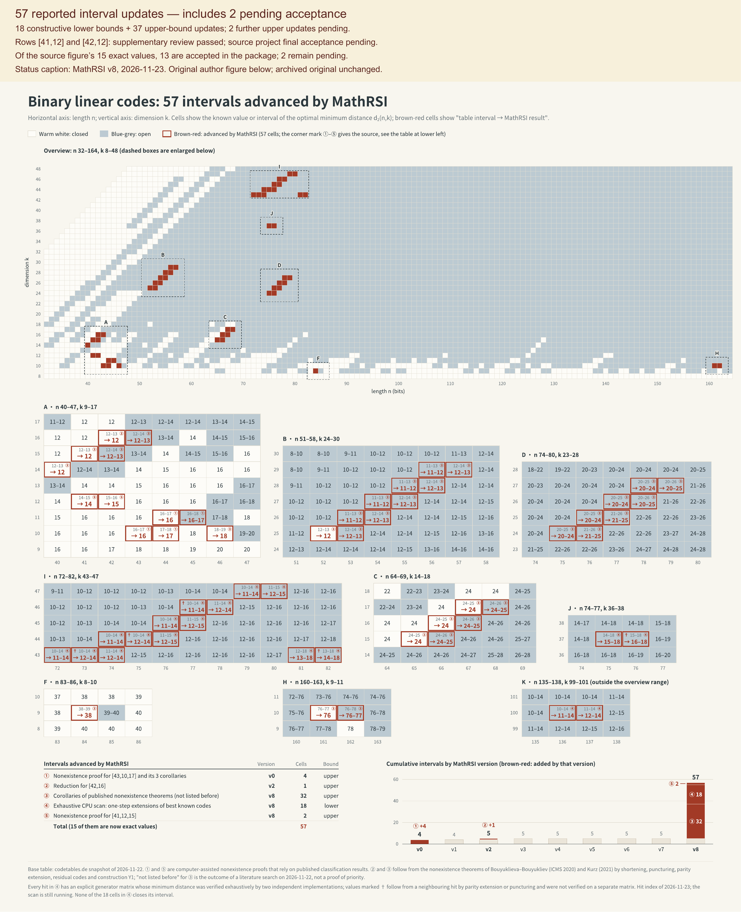
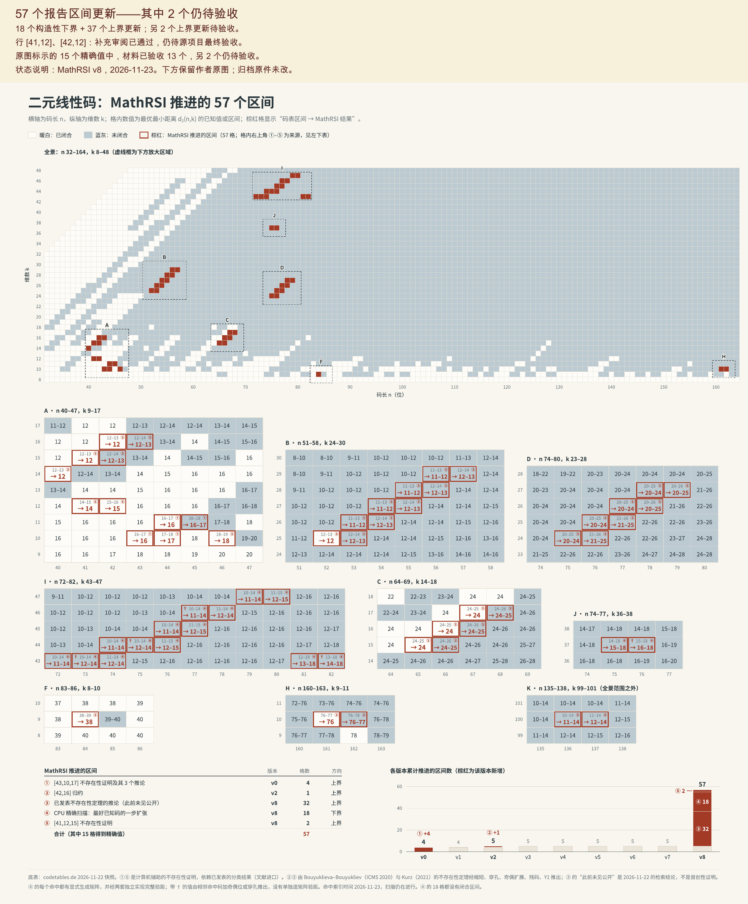

ECC · 2026-11-23
Better binary codes and tighter distance bounds
Fix the code length n and the number of information bits k. Constructing a code shows what distance is achievable. Ruling out a larger distance tightens the upper bound. Here are the results for 57 settings.
A [72,43,11] code encodes 43 bits into 72 and guarantees correction of any five flipped bits—one more than guaranteed by the old distance-10 lower bound.
The tables compare the 22 November 2026 CodeTables snapshot with the MathRSI results collected on 23 November.
18 codes that improve lower bounds
Each row has a generator matrix you can download. Thirteen come directly from the search. Five (†) come from adding a parity bit or removing a coordinate from a neighboring code. All 18 attain the stated lower bound. Their optimal distances remain open.
On a narrow screen, scroll the table horizontally for downloads and evidence.
| Cell [n,k] | Table · 2026-11-22 | Reported · 2026-11-23 | Code / status | Evidence |
|---|---|---|---|---|
| [72,43] | [10, 14] | [11, 14] | Download G.txt | Construction · Direct matrix |
| [73,43] † | [10, 14] | [12, 14] | Download G.txt | Construction · Parity extension |
| [74,43] | [11, 14] | [12, 14] | Download G.txt | Construction · Direct matrix |
| [74,44] | [10, 14] | [11, 14] | Download G.txt | Construction · Direct matrix |
| [75,37] | [14, 18] | [15, 18] | Download G.txt | Construction · Direct matrix |
| [75,44] † | [10, 14] | [12, 14] | Download G.txt | Construction · Parity extension |
| [76,37] † | [15, 18] | [16, 18] | Download G.txt | Construction · Parity extension |
| [76,44] | [11, 15] | [12, 15] | Download G.txt | Construction · Direct matrix |
| [76,45] | [10, 14] | [11, 14] | Download G.txt | Construction · Direct matrix |
| [77,45] | [11, 15] | [12, 15] | Download G.txt | Construction · Direct matrix |
| [77,46] † | [10, 14] | [11, 14] | Download G.txt | Construction · Puncture last coordinate |
| [78,46] | [11, 14] | [12, 14] | Download G.txt | Construction · Direct matrix |
| [79,47] | [10, 14] | [11, 14] | Download G.txt | Construction · Direct matrix |
| [80,47] | [11, 15] | [12, 15] | Download G.txt | Construction · Direct matrix |
| [81,43] | [12, 18] | [13, 18] | Download G.txt | Construction · Direct matrix |
| [82,43] † | [13, 18] | [14, 18] | Download G.txt | Construction · Parity extension |
| [136,100] | [10, 14] | [11, 14] | Download G.txt | Construction · Direct matrix |
| [137,100] | [11, 14] | [12, 14] | Download G.txt | Construction · Direct matrix |
37 tighter upper bounds
These include five earlier results and 32 new consequences of three published theorems and 54 existing table bounds. In 13 settings the upper bound meets a known code, settling the optimum.
On a narrow screen, scroll the table horizontally for downloads and evidence.
| Cell [n,k] | Table · 2026-11-22 | Reported · 2026-11-23 | Code / status | Evidence |
|---|---|---|---|---|
| [43,10] | [16, 17] | [16, 16] | Exact value | Proof and sources |
| [44,10] | [17, 18] | [17, 17] | Exact value | Proof and sources |
| [44,11] | [16, 17] | [16, 16] | Exact value | Proof and sources |
| [45,11] | [16, 18] | [16, 17] | Open interval | Proof and sources |
| [42,16] | [12, 13] | [12, 12] | Exact value | Proof and sources |
| [40,14] | [12, 13] | [12, 12] | Exact value | Proof and sources |
| [41,15] | [12, 13] | [12, 12] | Exact value | Proof and sources |
| [42,15] | [12, 14] | [12, 13] | Open interval | Proof and sources |
| [43,16] | [12, 14] | [12, 13] | Open interval | Proof and sources |
| [46,10] | [18, 19] | [18, 18] | Exact value | Proof and sources |
| [52,25] | [12, 13] | [12, 12] | Exact value | Proof and sources |
| [53,25] | [12, 14] | [12, 13] | Open interval | Proof and sources |
| [53,26] | [11, 13] | [11, 12] | Open interval | Proof and sources |
| [54,26] | [12, 14] | [12, 13] | Open interval | Proof and sources |
| [54,27] | [11, 13] | [11, 12] | Open interval | Proof and sources |
| [55,27] | [12, 14] | [12, 13] | Open interval | Proof and sources |
| [55,28] | [11, 13] | [11, 12] | Open interval | Proof and sources |
| [56,28] | [12, 14] | [12, 13] | Open interval | Proof and sources |
| [56,29] | [11, 13] | [11, 12] | Open interval | Proof and sources |
| [57,29] | [12, 14] | [12, 13] | Open interval | Proof and sources |
| [65,15] | [24, 25] | [24, 24] | Exact value | Proof and sources |
| [66,15] | [24, 26] | [24, 25] | Open interval | Proof and sources |
| [66,16] | [24, 25] | [24, 24] | Exact value | Proof and sources |
| [67,16] | [24, 26] | [24, 25] | Open interval | Proof and sources |
| [67,17] | [24, 25] | [24, 24] | Exact value | Proof and sources |
| [68,17] | [24, 26] | [24, 25] | Open interval | Proof and sources |
| [75,24] | [20, 25] | [20, 24] | Open interval | Proof and sources |
| [76,24] | [21, 26] | [21, 25] | Open interval | Proof and sources |
| [76,25] | [20, 25] | [20, 24] | Open interval | Proof and sources |
| [77,25] | [21, 26] | [21, 25] | Open interval | Proof and sources |
| [77,26] | [20, 25] | [20, 24] | Open interval | Proof and sources |
| [78,26] | [20, 26] | [20, 25] | Open interval | Proof and sources |
| [78,27] | [20, 25] | [20, 24] | Open interval | Proof and sources |
| [79,27] | [20, 26] | [20, 25] | Open interval | Proof and sources |
| [84,9] | [38, 39] | [38, 38] | Exact value | Proof and sources |
| [161,10] | [76, 77] | [76, 76] | Exact value | Proof and sources |
| [162,10] | [76, 78] | [76, 77] | Open interval | Proof and sources |
Two proposed upper bounds awaiting final acceptance
The supplementary Gemini Carbon review passed all six frozen questions under the imported assumptions. The source project’s final acceptance of the [41,12] result and its [42,12] corollary is pending.
On a narrow screen, scroll the table horizontally for downloads and evidence.
| Cell [n,k] | Table · 2026-11-22 | Reported · 2026-11-23 | Code / status | Evidence |
|---|---|---|---|---|
| [41,12] | [14, 15] | [14, 14] | Final acceptance pending | Proof and sources |
| [42,12] | [15, 16] | [15, 15] | Final acceptance pending | Proof and sources |
Share the figures with acceptance status
The status strip identifies [41,12] and [42,12]: supplementary review passed; the source project’s final acceptance is pending. The source chart’s 15 exact values include these two; 13 are accepted in the package.
English figure · status included · PNG · PDF · Chinese figure · status included · PNG · PDF




What supports these updates
The original archive supplied no separate matrices for the five derived values. Their v8 downloads apply standard transformations and check rank, using the original accepted distance guarantees rather than new exhaustive distance replays.
Constructive hits have explicit generators and two archived exhaustive distance implementations. Five stronger displayed values follow standard parity extension or puncturing; the downloads construct these matrices deterministically. All 18 exported generators were checked for full rank. Local independent exhaustive spot replays covered [72,43] and [74,43], not all 22 archived source matrices.
Upper-bound arguments use published nonexistence and classification results; the 32 corollaries also use 54 earlier table bounds. Supplementary review has passed for [41,12]; final source-project acceptance remains pending.
v8 verification record · Full package and trust conditions · All 57 cells · CSV · CLI export and reproducibility